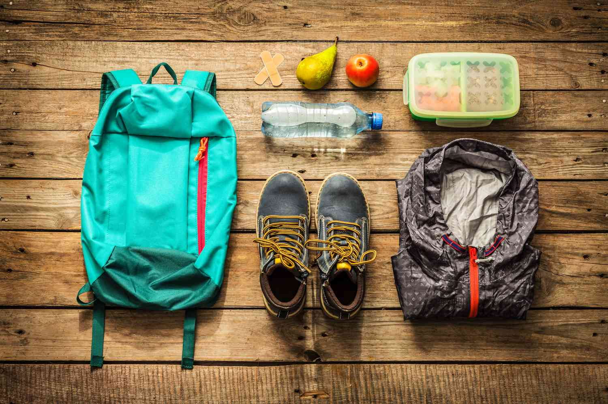

Gear Guide
Being prepared with the right gear can make or break your hike. Here’s what you need to pack for a safe and comfortable experience on Arizona’s trails.
Essential Gear
- Sturdy hiking boots with good grip
- Hydration pack or water bottles (2–3 liters minimum)
- Snacks and energy bars
- Trail map, compass, or GPS
- First aid kit
Seasonal Considerations
Arizona’s climate varies widely. In summer, pack extra water, sunblock, and a hat. For winter hikes, bring layers and gloves as desert temps can drop suddenly.
Buying Tips
Invest in quality boots and a reliable pack. Test your gear on shorter hikes before tackling longer treks.
